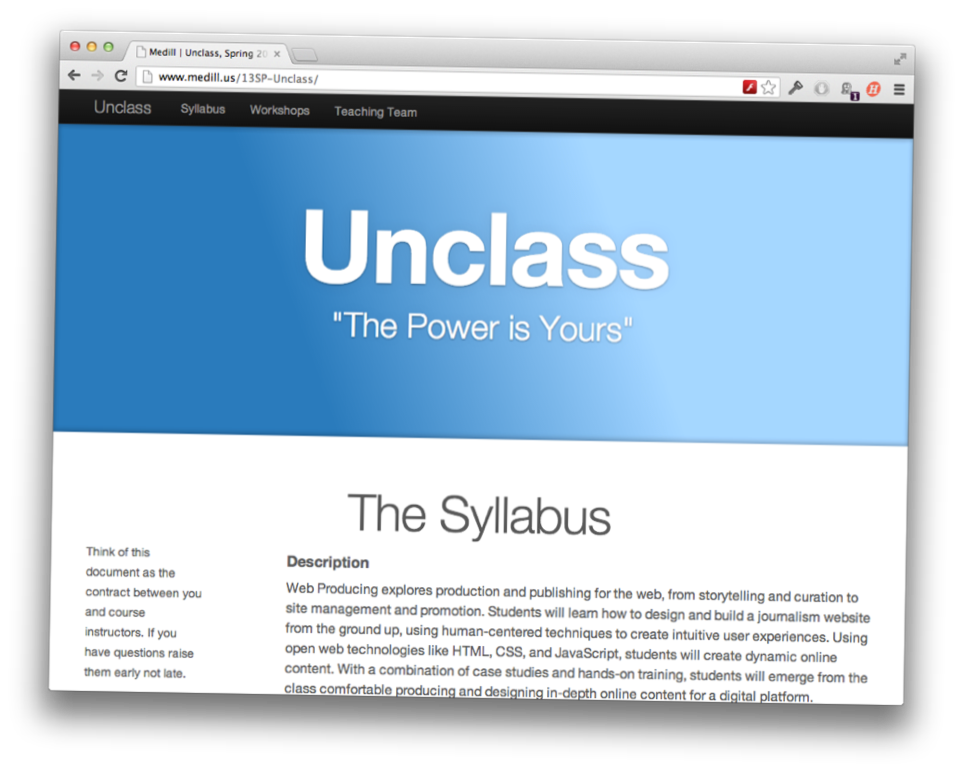
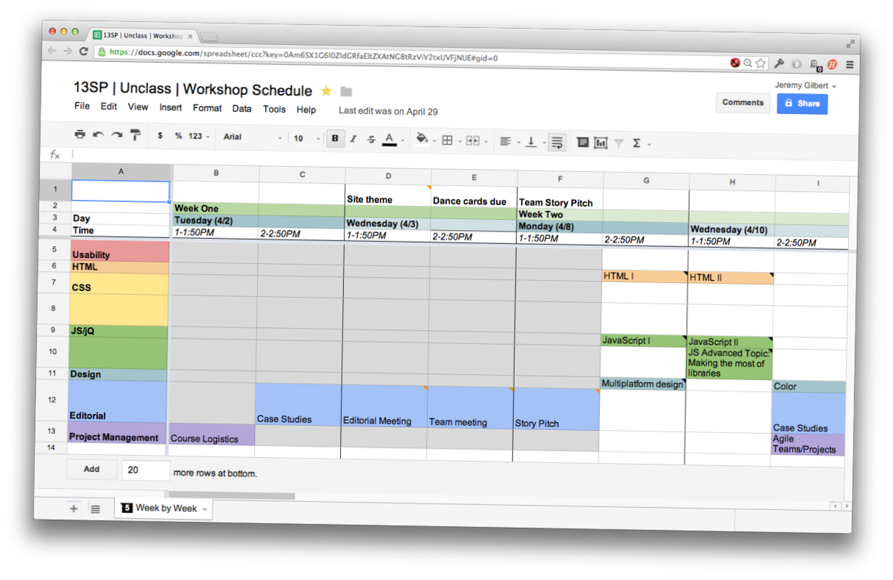
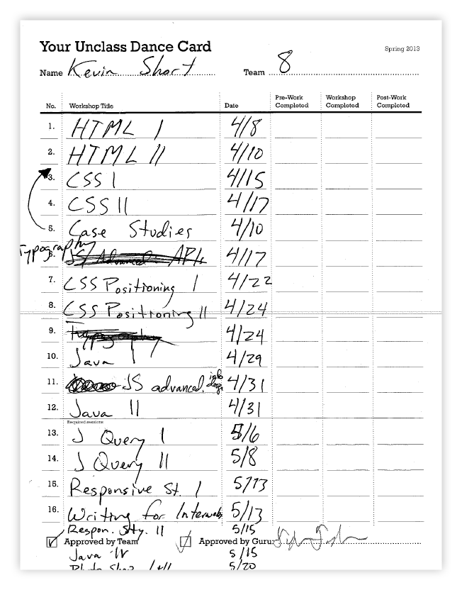
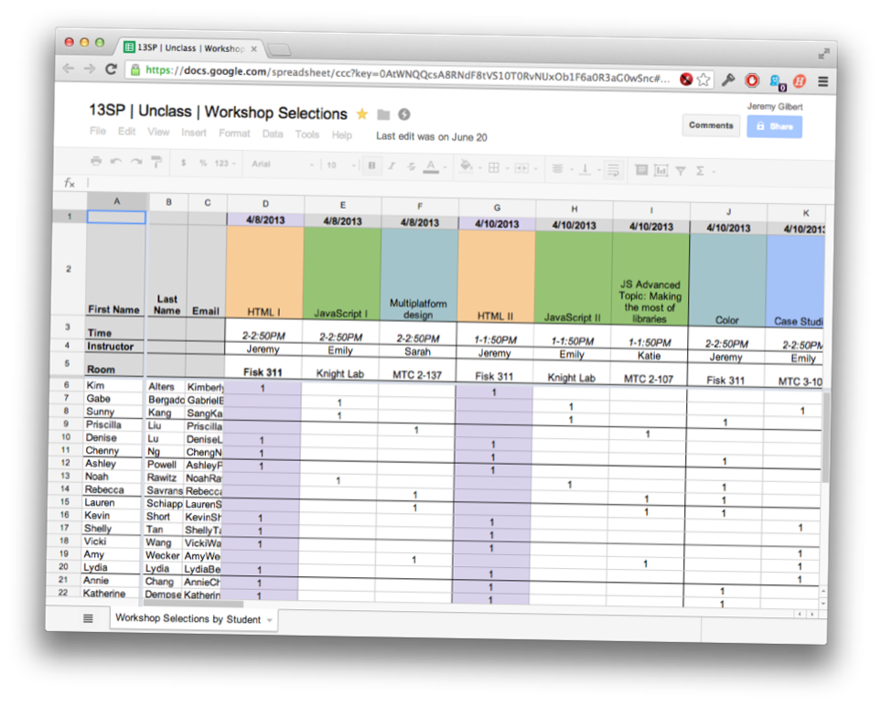

Known Fact
Working in teams mirrors the profession.
Known Fact
Working in teams drives students’ crazy.
Competing Classes
Interactive
Producing
+
Interactive
Design
Thirty-Two Students
Eight Teams
Individual Learning Plans
Co-Instructor
Resident Student Gurus
Key Deliverables
Content
- Theme Pitch
- Story Pitch
- Storyboard
- Draft content
Design
- Mood Board
- Wireframes
- Typography
- Color Palette
- Paper Prototype
- Usability:
Task Analysis
Code
- Content Markup
(HTML)
- Interaction
(JS)
- Visual Styling
(CSS)
- Optimization




Questions
BY Jeremy Gilbert